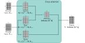
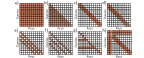

Encoder-decoder model
In this section, we will discuss encoder-decoder models, which are commonly used for sequence-to-sequence tasks such as machine translation.
Translation between languages is an example of a sequence-to-sequence task. One com- mon approach uses both an encoder (to compute a good representation of the source sentence) and a decoder (to generate the sentence in the target language). This is aptly called an encoder-decoder model.
Consider translating from English to French. The encoder receives the sentence in English and processes it through a series of transformer layers to create an output representation for each token. During training, the decoder receives the ground truth translation in French and passes it through a series of transformer layers that use masked self-attention and predict the following word at each position. However, the decoder layers also attend to the output of the encoder. Consequently, each French output word is conditioned on the previous output words and the source English sentence (figure 12.13).
This is achieved by modifying the transformer layers in the decoder. Originally, these consisted of a masked self-attention layer followed by a neural network applied individually to each embedding (figure 12.12). A new self-attention layer is added be- tween these two components, in which the decoder embeddings attend to the encoder embeddings. This uses a version of self-attention known as encoder-decoder attention or cross-attention, where the queries are computed from the decoder embeddings and the keys and values from the encoder embeddings (figure 12.14).

Cross-attention. The flow of computation is the same as in standard self-attention, but the queries are calculated from the decoder embeddings Xdec, and the keys and values from the encoder embeddings Xenc. For translation tasks, the encoder contains information about the source language statistics, and the decoder contains information about the target language statistics.
Transformers for long sequences
Since each token in a transformer encoder model interacts with every other token, the computational complexity scales quadratically with the length of the sequence. For a decoder model, each token only interacts with previous tokens, so there are roughly half the number of interactions, but the complexity still scales quadratically. These relationships can be visualized as interaction matrices (figure 12.15a–b). This quadratic increase in the amount of computation ultimately limits the length of sequences that can be used. Many methods have been developed to extend the transformer to cope with longer sequences. One approach is to prune the self-attention in- teractions or, equivalently, to sparsify the interaction matrix (figures 12.15c-h). For example, this can be restricted to a convolutional structure so that each token only in- teracts with a few neighboring tokens. Across multiple layers, tokens still interact at larger distances as the receptive field expands. As for convolution in images, the kernel can vary in size and dilation rate.
A pure convolutional approach requires many layers to integrate information over large distances. One way to speed up this process is to allow certain tokens (perhaps at the start of every sentence) to attend to all other tokens (encoder model) or all previous tokens (decoder model). A similar idea is to have a small number of global tokens that connect to all the other tokens and themselves. Like the

Interaction matrices for self-attention. a) In an encoder, every token interacts with every other token, and computation expands quadratically with the number of tokens. b) In a decoder, each token only interacts with the previous tokens, but complexity is still quadratic. c) Complexity can be reduced by using a convolutional structure (encoder case). d) Convolutional structure for decoder case. e–f) Convolutional structure with dilation rate of two and three (decoder case). g) Another strategy is to allow selected tokens to interact with all the other tokens (encoder case) or all the previous tokens (decoder case pictured). h) Alternatively, global tokens can be introduced (left two columns and top two rows). These interact with all of the tokens as well as with each other.